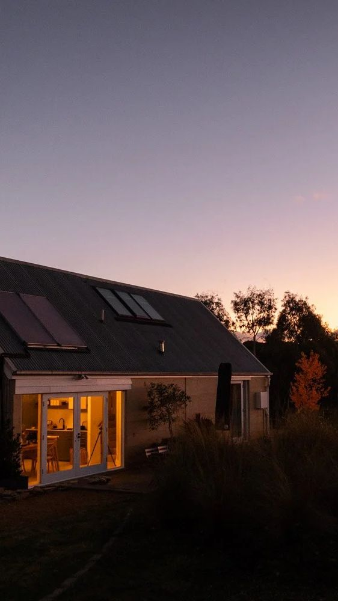
Gundaroo, on the Southern Tablelands of NSW
A two-bedroom barn on a working cattle farm.
Rammed earth, a wood heater and a heated pool, 40 minutes north of Canberra.
"Where native grasslands stretch to the horizon, a river meanders its way gently between ancient hills and where a billion stars blaze at midnight."
Nguurruu, in their own words
The walls came out of this ground.
The barn is rammed earth, quarried here on the farm and packed into its walls in layers.
Once the horse stables.
Award-winning architects AMC turned it into a barn for guests, with vaulted ceilings, linen, leather, wood, stone and copper.
The Walgalu word for "camp"
What the name means
Ngambri Walgalu custodian Paul House chose the name for the farm, out of respect for the many bush camps on the banks of the Yass River down through the ages.
Those camps were places to rest, share food, connect and tell stories. For at least 20,000 years the Ngambri, Wallabaloa and Pajong people moved through this landscape with the seasons, harvesting only what they needed and using traditional fire techniques to regenerate the land.
"In a sense, we are all just camping." From Nguurruu's own story of the name
Inside the barn
Two bedrooms, a full kitchen and a wood heater, under vaulted ceilings. Breakfast provisions are included.
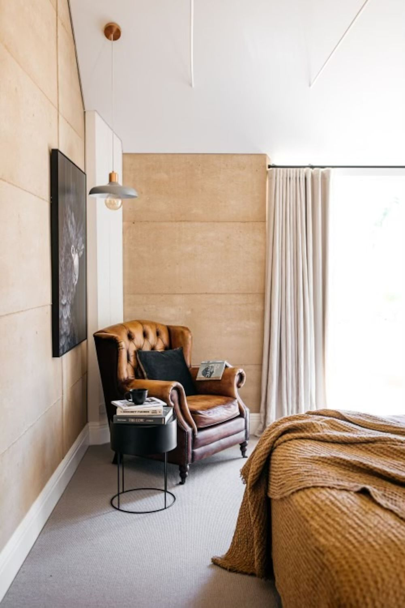
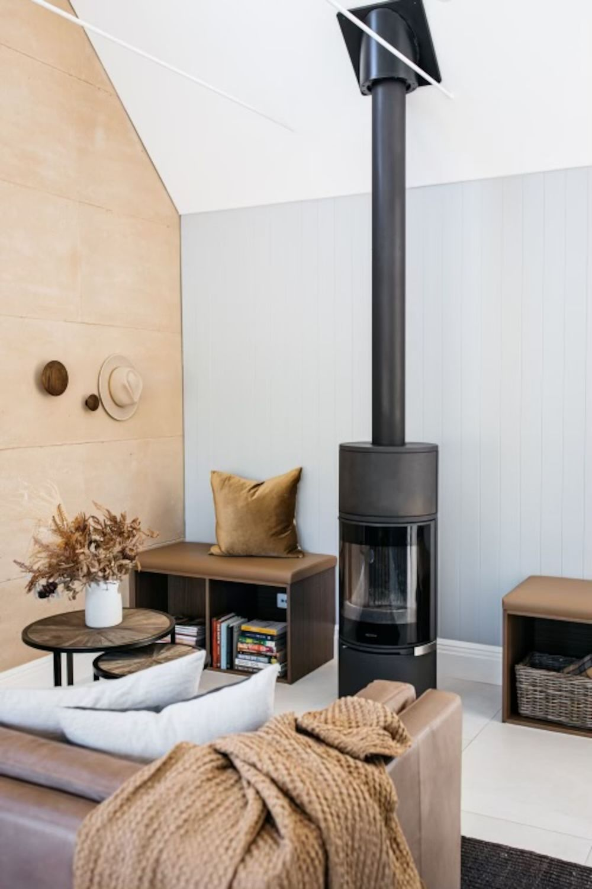
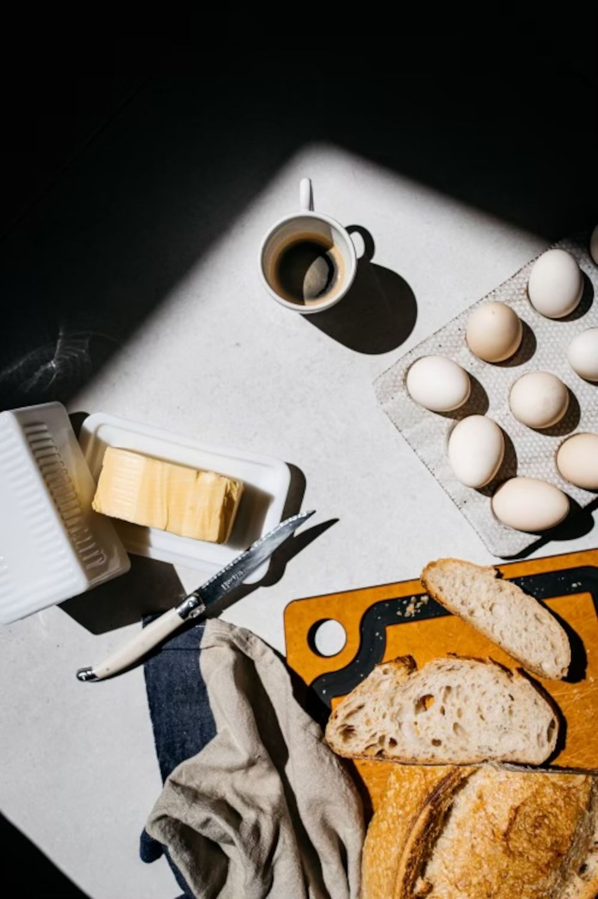
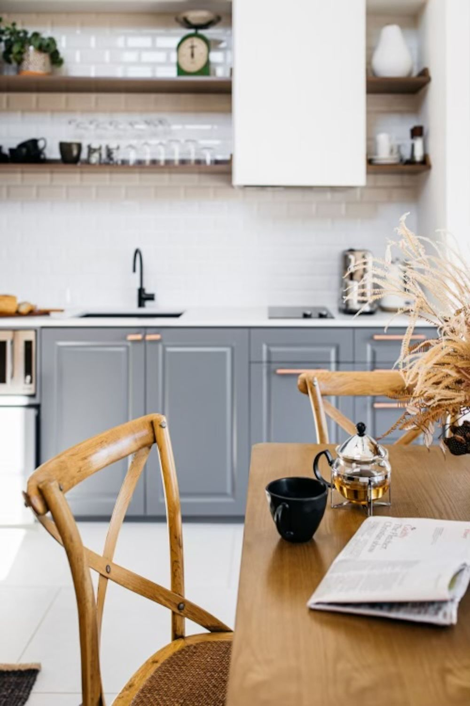
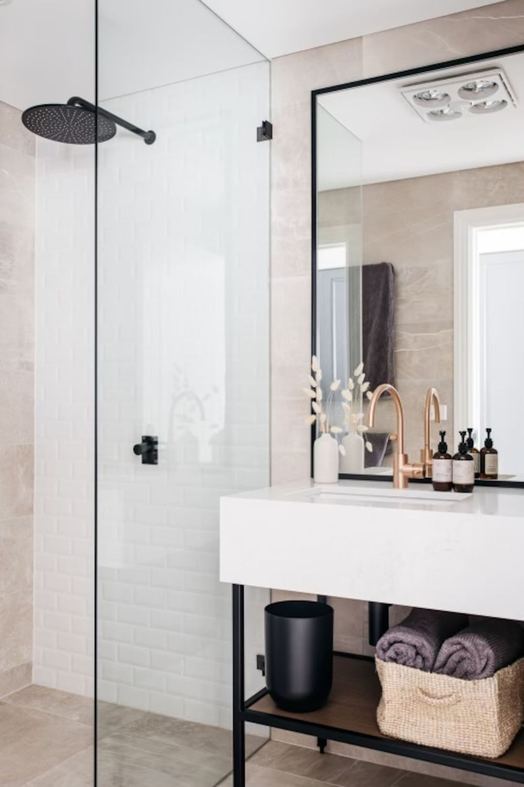
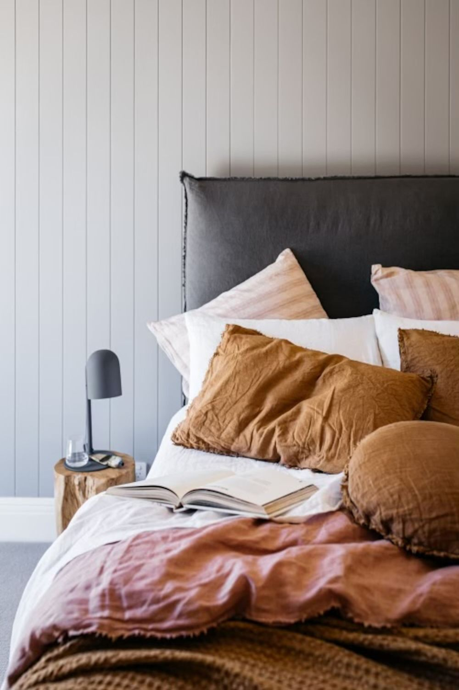
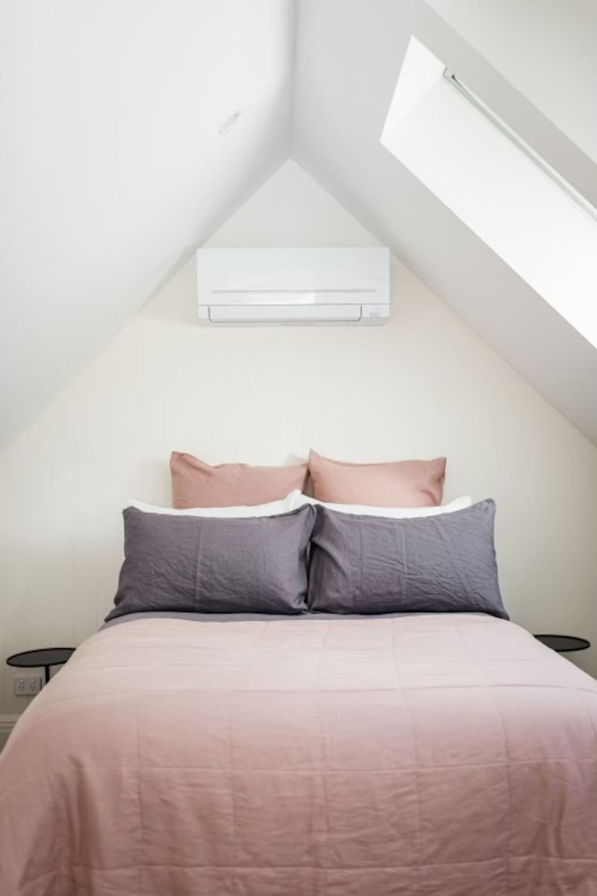
- Bedrooms
- Two. The main one is on the ground floor; the smaller one is upstairs.
- Warm and cool
- Wood heater and air conditioning.
- Kitchen
- A full kitchen, with breakfast provisions.
- Bathroom
- Walk-in shower.
- Families
- A cot and high chair are available.
- Parking
- Right beside the entrance.
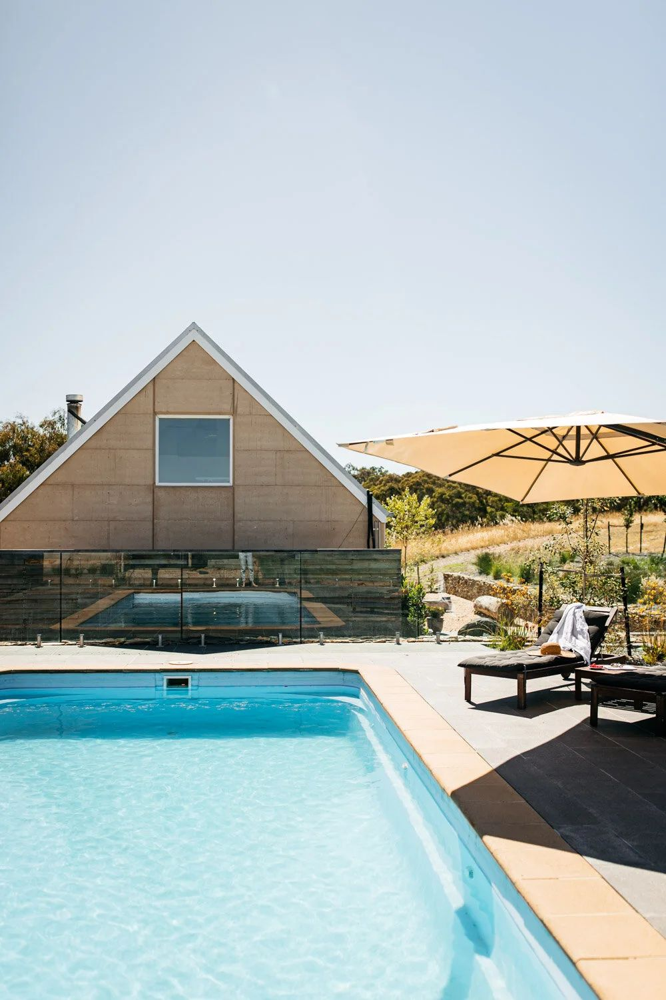
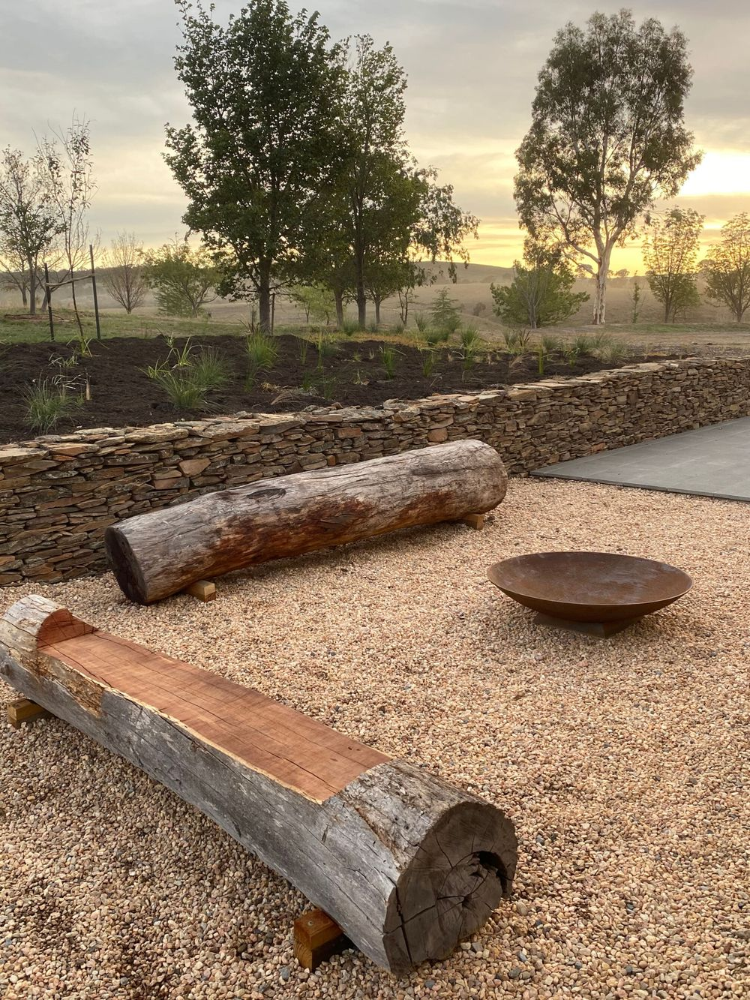
A heated pool, and a fire pit for after dark
The in-ground pool is heated and sits right next to the barn. When the sun goes, light the fire pit and pull up a log.
"I enjoyed using the pool each day and also the fire pit one evening." Sarah, Airbnb
The farm
220 acres of native grassland and hills along the Yass River. Michelle and Murray breed Belted Galloway cattle and rare Silver Grey Dorking chickens, and grow fruit and vegetables. They farm biodynamically, with no agricultural chemicals, under the guidance of Dr Charles Massy.
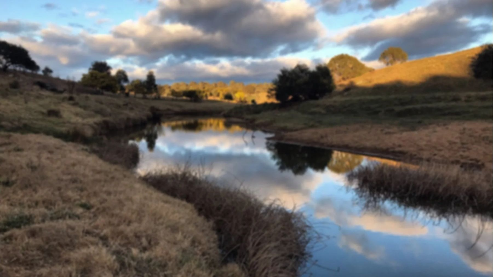
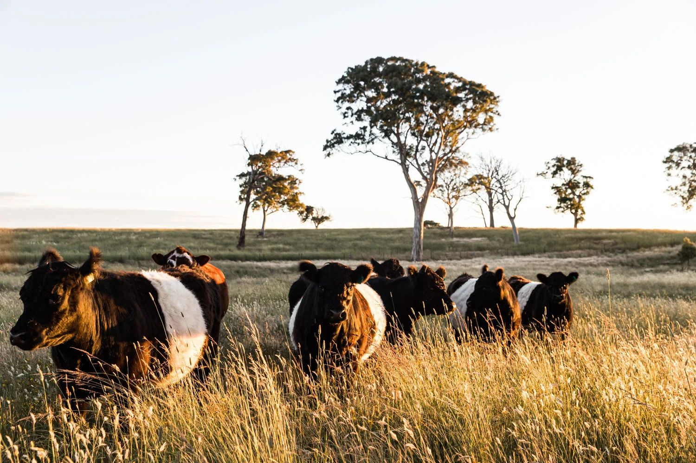
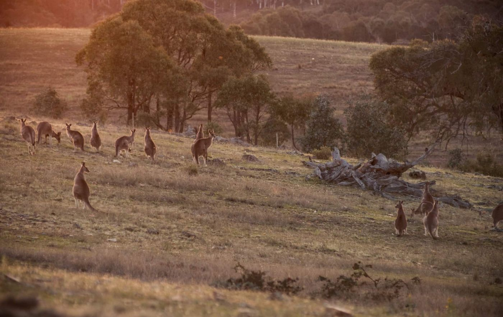
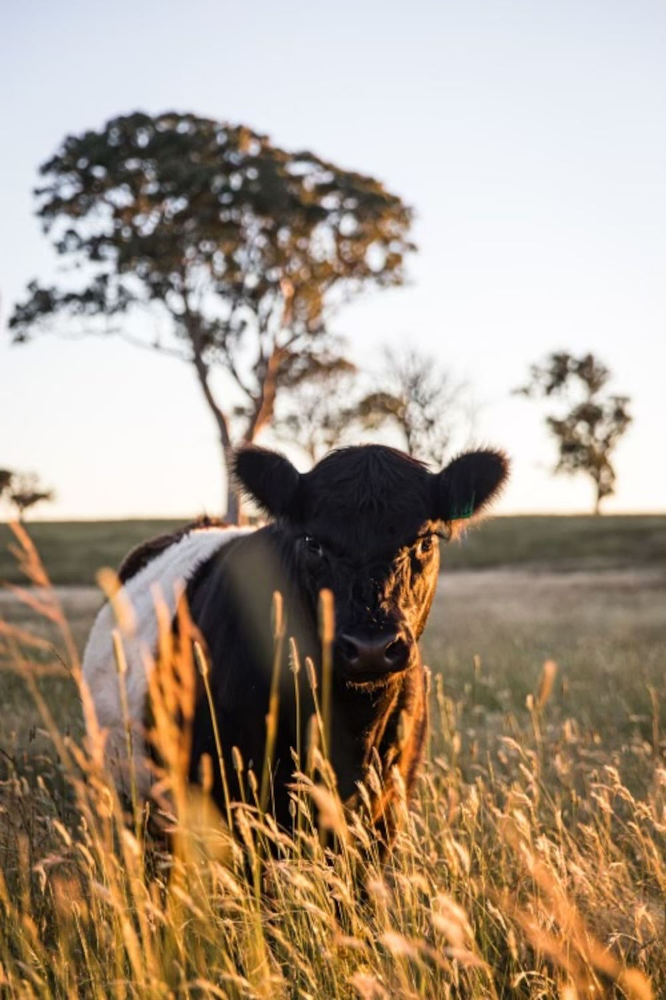
- Kangaroos up in the hills
"The kids loved walking around the property and spotting the Kangaroos up in the hills." Mitchell, Airbnb
- Chickens, horses and ponies
"Our son loved feeding their heritage chickens, friendly horses and ponies, exploring the bush trails…" Ria, Airbnb
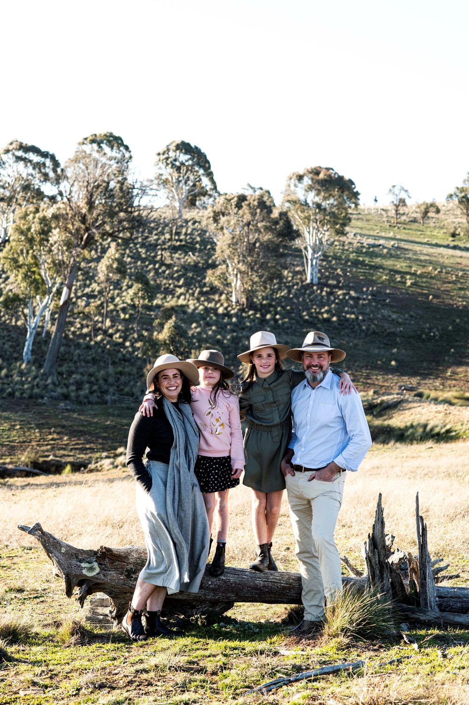
Michelle, Murray, Maddy and Tilly
The family lives on the farm and looks after the land, with the aim of leaving it in much better condition than they found it. Because they live on site, they can often help with luggage, adapt a farm tour, or bring an animal experience closer to the barn.
What guests say
"Looking back to the house from the river at sunrise was just stunning. The house golden in the morning light."
Elizabeth, Airbnb, April 2026
"Fresh farm eggs and sourdough for Breakfast was a hit with the family."
Mitchell, Airbnb, July 2026
"Great country escape located surprisingly close to Canberra. Thoughtfully curated and very comfortable."
Grace, Airbnb, September 2026
"Murray kindly took us up into the hills to meet their gorgeous Scottish cows."
Ria, Airbnb, July 2026
Getting here
| Canberra | 40 min south |
|---|---|
| Sydney | 2 hr 45 min |
| Wineries | About 30 min |
Canberra and Sydney times are Nguurruu's own. The wineries are a guest's estimate.
Where to eat, their picks
- Grazing
- Cork Street
- The Gundaroo Inn
- Gundog Estate
- Neat St Coffee
Before you book
- The front and back doors are wider than standard, and the entrance is largely step-free, apart from a low door threshold.
- Paths outside are loose pebble. The bathroom has no grab rails.
- It's a working farm: expect gates, livestock, uneven ground and farm sounds.
- Travelling with an assistance animal? Talk to Michelle or Murray before booking, because of the livestock and horses.
Check dates
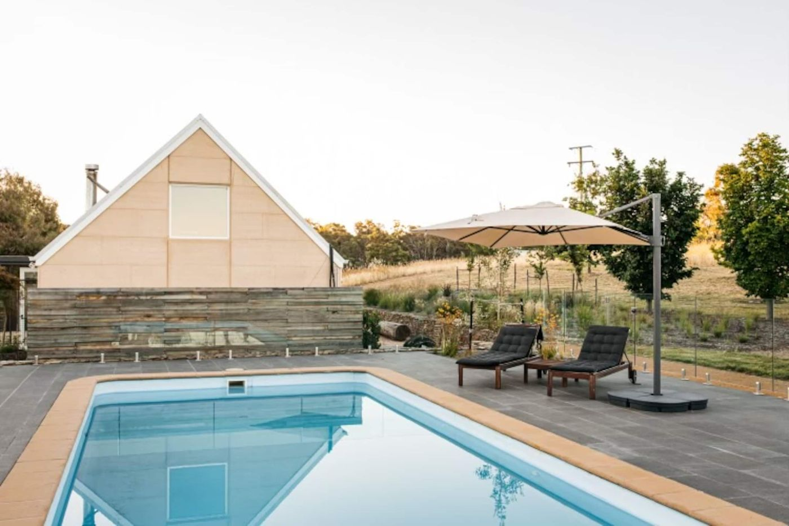
The whole barn, two bedrooms. Book through Airbnb, or ask Michelle and Murray about your dates.
Ask about your stay
Any needs, a farm tour, or whether the barn suits your group.
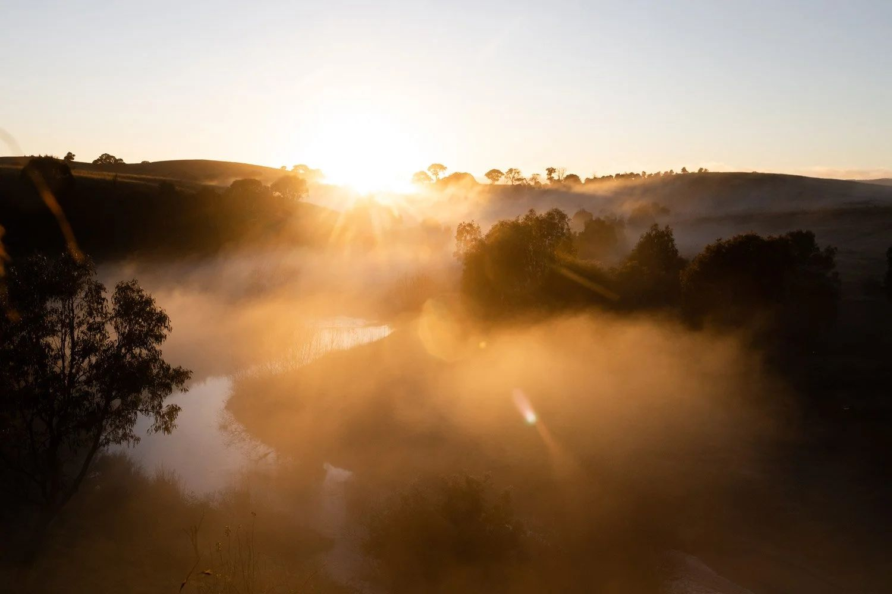